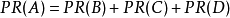
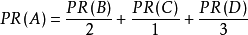
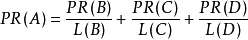
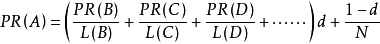

PageRank
PageRank，网页排名，又称网页级别、Google左侧排名或佩奇排名，是一种由[1] 根据网页之间相互的超链接计算的技术，而作为网页排名的要素之一，以Google公司创办人拉里·佩奇（Larry Page）之姓来命名。Google用它来体现网页的相关性和重要性，在搜索引擎优化操作中是经常被用来评估网页优化的成效因素之一。Google的创始人拉里·佩奇和谢尔盖·布林于1998年在斯坦福大学发明了这项技术。
PageRank通过网络浩瀚的超链接关系来确定一个页面的等级。Google把从A页面到B页面的链接解释为A页面给B页面投票，Google根据投票来源（甚至来源的来源，即链接到A页面的页面）和投票目标的等级来决定新的等级。简单的说，一个高等级的页面可以使其他低等级页面的等级提升。
概念
PageRank是Google专有的算法，用于衡量特定网页相对于搜索引擎索引中的其他网页而言的重要程度。它由Larry Page 和 Sergey Brin在20世纪90年代后期发明。PageRank实现了将链接价值概念作为排名因素。
PageRank将对页面的链接看成投票，指示了重要性。
算法
PageRank让链接来"投票"
一个页面的“得票数”由所有链向它的页面的重要性来决定，到一个页面的超链接相当于对该页投一票。一个页面的PageRank是由所有链向它的页面（“链入页面”）的重要性经过递归算法得到的。一个有较多链入的页面会有较高的等级，相反如果一个页面没有任何链入页面，那么它没有等级。
2005年初，Google为网页链接推出一项新属性nofollow，使得网站管理员和网站作者可以做出一些Google不计票的链接，也就是说这些链接不算作"投票"。nofollow的设置可以抵制评论垃圾。
假设一个由4个页面组成的小团体：A，B，C和D。如果所有页面都链向A，那么A的PR（PageRank）值将是B，C及D的Pagerank总和。

继续假设B也有链接到C，并且D也有链接到包括A的3个页面。一个页面不能投票2次。所以B给每个页面半票。以同样的逻辑，D投出的票只有三分之一算到了A的PageRank上。

换句话说，根据链出总数平分一个页面的PR值。

最后，所有这些被换算为一个百分比再乘上一个系数。由于“没有向外链接的页面”传递出去的PageRank会是0，所以，Google通过数学系统给了每个页面一个最小值：

说明：在Sergey Brin和Lawrence Page的1998年原文中给每一个页面设定的最小值是1-d，而不是这里的(1-d)/N。 所以一个页面的PageRank是由其他页面的PageRank计算得到。Google不断的重复计算每个页面的PageRank。如果给每个页面一个随机PageRank值（非0），那么经过不断的重复计算，这些页面的PR值会趋向于稳定，也就是收敛的状态。这就是搜索引擎使用它的原因。
指标
Google工具条上的PageRank指标从0到10。它似乎是一个对数标度算法，细节未知。PageRank是Google的商标，其技术亦已经申请专利。
PageRank近似于一个用户，是指在Internet上随机地单击链接将会到达特定网页的可能性。通常，能够从更多地方到达的网页更为重要，因此具有更高的PageRank。每个到其他网页的链接，都增加了该网页的PageRank。具有较高PageRank的网页一般都是通过更多其他网页的链接而提高的。
为了查看站点PageRank，请安装GOOGLE工具条并启用PageRank特性，或者在firefox安装SearchStatus插件。但是请注意，GOOGLE所指示的PageRank是个缓冲值，通常是过时的。
更新频率
PageRank值每年只发布几次，有时就得使用过时信息，因此，PageRank并不是一个非常精确的度量。GOOGLE自己也似乎在使用更精确的值来进行排名。
在GOOGLE使用来构造搜索结果页面的采集算法中，PageRank只是其中的一个因素。有可能在特定查询下，具有较低PageRank的页面仍然能够排在具有较高PageRank的页面前面。PageRank也不一定是相关的，它使用链接来衡量整体受欢迎程度，而不是使用相关主题。GOOGLE在计算搜索排名时也考虑链接的相关程度，因此PageRank不应该成为搜索引擎营销的唯一重点。构建相关链接，通常也自然会带来较高的PageRank。此外，为了提高PageRank而特意构建太多的不相关链接也有可能损害站点的排名，因为GOOGLE试图检测并对不相关链接降分，认为这种链接是用于提高排名得分的。
PageRank还被用户广泛认为是站点可靠的因素，因为用户倾向于相信带有较高值的站点更为著名或权威。当然，这就是PageRank所设计的目标。这个概念是GOOGLE所认可的，因此GOOGLE通过减少或清零PageRank来惩罚那些垃圾或不相关站点。
其它算法
GOOGLE PageRank并不是唯一的链接相关的排名算法，而是最为广泛使用的一种。其他算法还有：
一、Hilltop 算法
二、ExpertRank
三、HITS
四、TrustRank